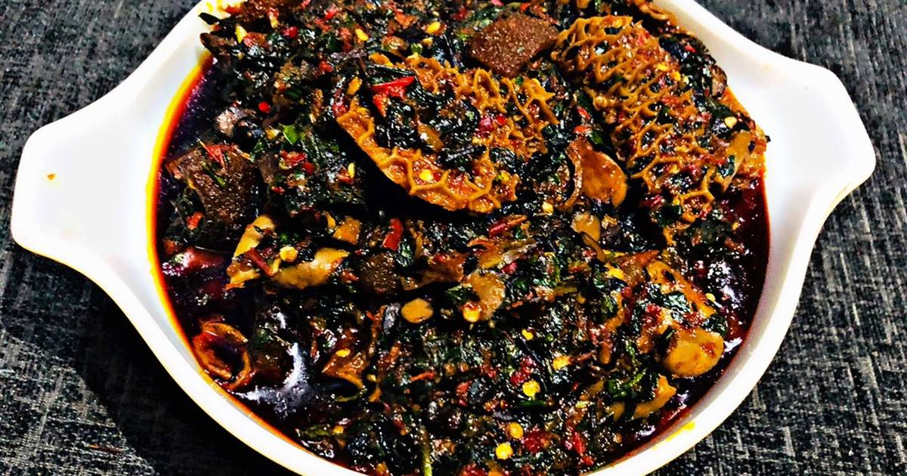

Efo riro soup

Efo riro is Yoruba tribe soup in Nigeria. It is know for it nice smell and lots of vitamins food items usually contains.
Ingredient(s):
- Seasonings
- Palm oil
- Pepper
- Fish and assorted meat
- Locust bean (Iru)
- Vegetable leaves
Steps:
- Fry pepper with the assorted meat/fish
- Add the vegetable leaves then allow to steam for 5mins (min)
Homepage